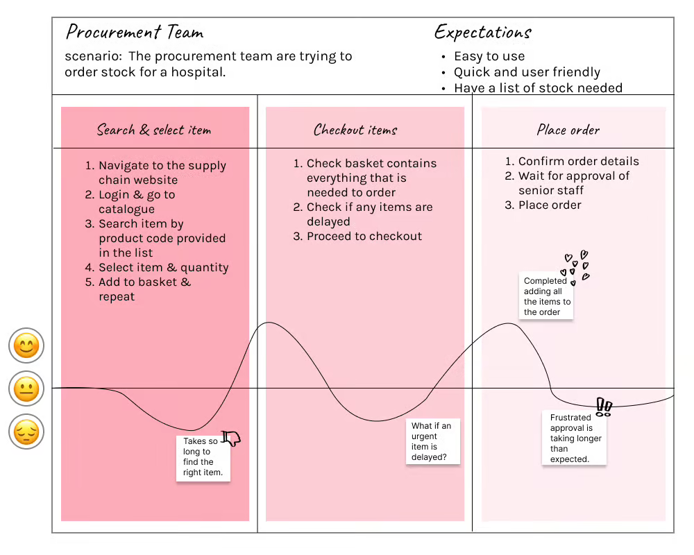
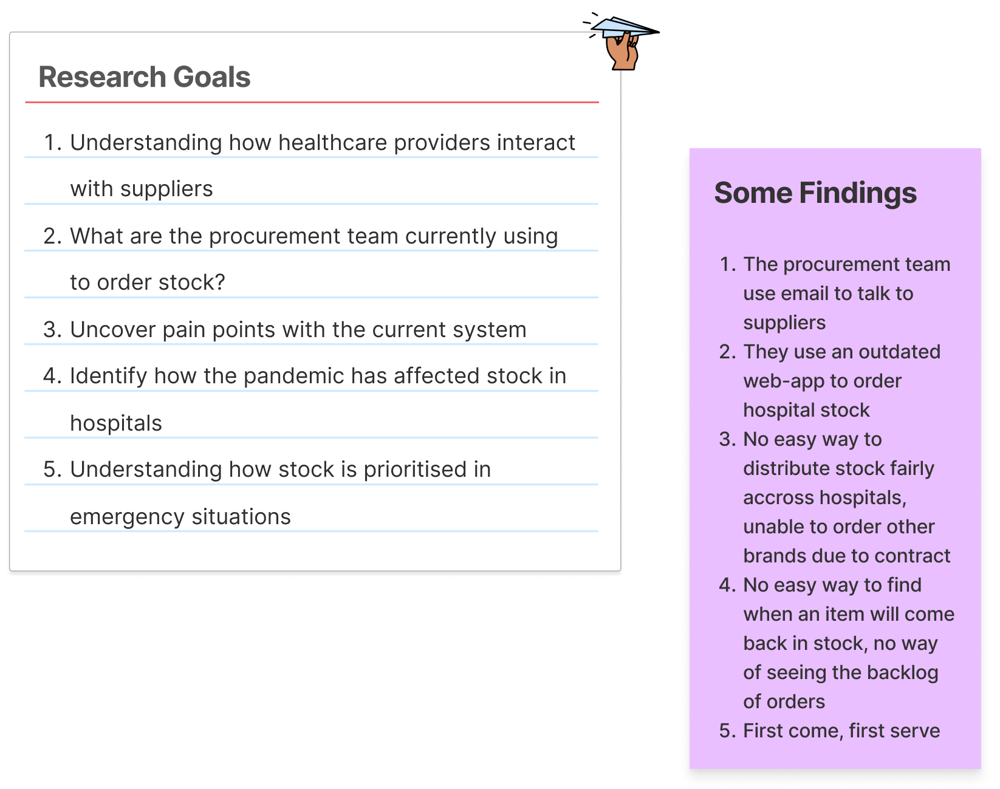
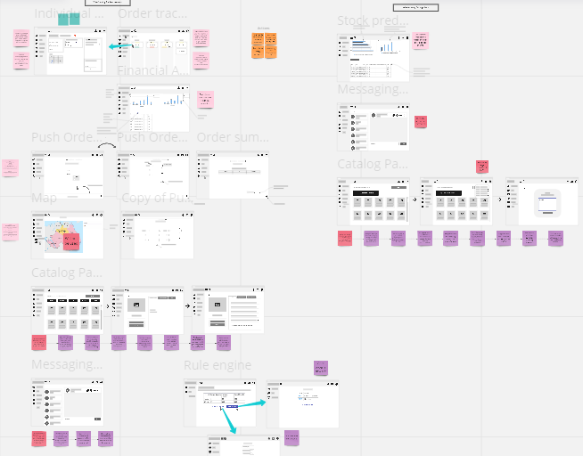
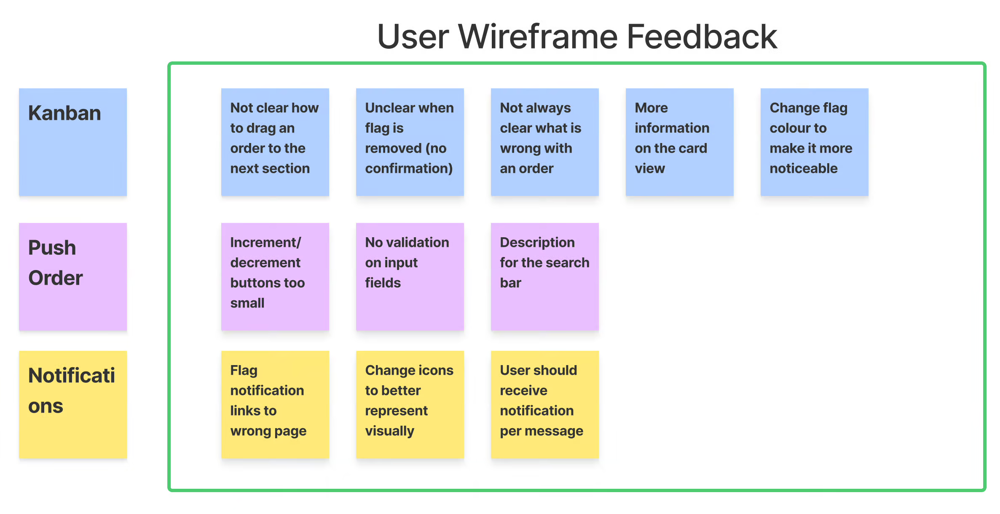
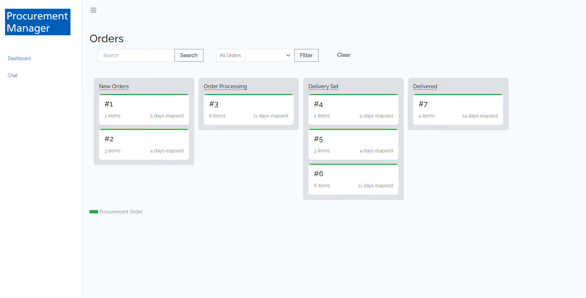

Overview
What is the problem?
Currently, there is a lack of communication between the healthcare providers and suppliers when ordering stock for hospitals in England. This leads to delays and could cause distruption in the pipeline.
I spent 12 weeks working as part of a team to create a solution for this problem.
Design Approach
We decided to follow the Divergent and Convergent Design Thinking Methodology (an iterative design process). This method entails problem finding and solution seeking, followed by lots of testing and refining. Each phase (problem diverge, problem converge, solution diverge & solution converge) was split into 3 week sprints.
Why did we choose this approach?
- It encouraged us to solve the right problems and focus on what the user needs
- It encouraged us to consider multiple design solutions
- It emphasized user feedback and design iteration
Research
Market Research
Before diving into brainstorming ideas and understanding the user pain points, it was important to understand what the current market had in place for ordering hospital stock in England. After further research it was evident that there was only one competitor; NHS Supply Chain. From closer investigation, the website was outdated and offered poor user experience. Not only was it difficult to navigate through the different items (and contains uneccessary amount of user clicks!) it was also hard to differentiate products from different suppliers.
User Personas
To better understand our user group, it was important to identify all possible users who are affected by each step of the process. Below are the two most important personas identified.
👨⚕️
Phil
32, Procurement Staff
Goal
Phil wants to be able to keep track of goods and services ordered/received. He also wants to maintain an accurate records of orders.
Frustrations
Currently, it is difficult for Phil to keep track of large amounts of stock and he is not always able to contact the supplier in time.
👩💼
Sarah
27, Supplier
Goal
Sarah wants to ensure that the hospitals are able to receive the stock as quickly as possible and she wants to maintain a good relationship with them.
Frustrations
It is challenging for Sarah to ensure that there are no issues with the supply chain.
User Journeys
I created a user journey map to better visualize the experience based on the procurement persona identified. This enabled us to identify their greatest challenges with the current approach.
User Research
To gather user insights, I conducted interviews with questions identified from personas and user journeys. These interviews were vital to identify weaknesses in the process and identify recurring pain points. These pain points became the focus of the features and design of our solution.
Design iteration
Once we identified the key areas which we wanted to tackle, it was time to start creating wireframe mock-ups.
One of the most important aspects of design is to regularly receive user feedback and therefore, I made the decision to seek user feedback based on the wireframe designs. We held an interview where we talked through each page and noted down the users reaction and queries. These points were then later discussed and designs were updated. 
Development
The functional prototype was developed with an Agile methodology. This was selected as it helped us iterate frequently to gather feedback and produce a higher quality end result.
Development was split into sprints. Each sprint we:
- Did team retrospectives to identify strengths & areas of improvement for the team with action items
- Reviewed prototype feedback and created backlog tickets
- Prioritised and estimated tickets
- Assigned and monitored progress/risks
By doing so we were able to create a focused and high quality prototype in very little time.
What I Learnt?
- Using a fast & highly-iterative approach such as Divergent and Convergent Design Thinking leads to much more innovative and creative project development
- User iterviews combined with journey maps allows for a great combination of specific and generalised problem understanding
- Producing fast prototypes helps gather higher quality feedback and increases user interest in the project
- Frequent team feedback helps keeping team morale and progress high